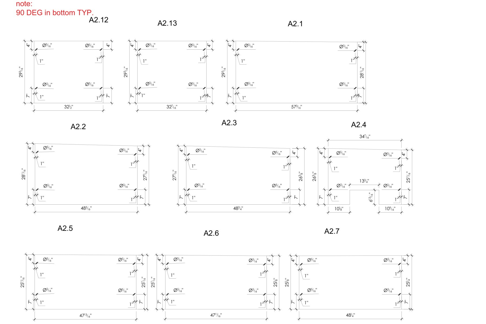

PROFESSIONAL EXPERIENCE · FABRICATION DOCUMENTATION
Metal Baffle Fabrication
A drawing package for custom panels with varied geometry, mounting hole patterns and cutouts.
The problem
Communicate panels with different outlines, hole patterns and cutouts in a form that can be read for fabrication coordination.
My role
I prepared dimensioned panel configurations and part identifiers for fabrication coordination.
Drawing decisions
The sheet groups panel variants and gives each an identifier. Overall dimensions, hole offsets and the cutout dimensions are shown alongside the relevant panel, keeping the geometry and its annotations together.
The result
The displayed output is a dimensioned fabrication layout with panel outlines and mounting-hole information. The portfolio does not claim that the parts were manufactured or report unverified production outcomes.
Selected drawing
One sheet shows varied panel widths, a cutout configuration, dimensions and mounting hole locations. Select the drawing to open it at full size.
